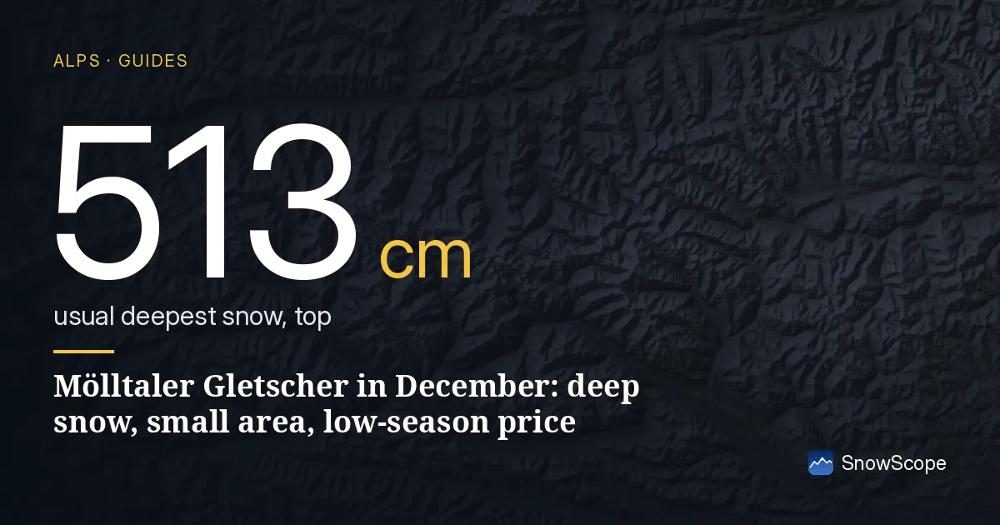
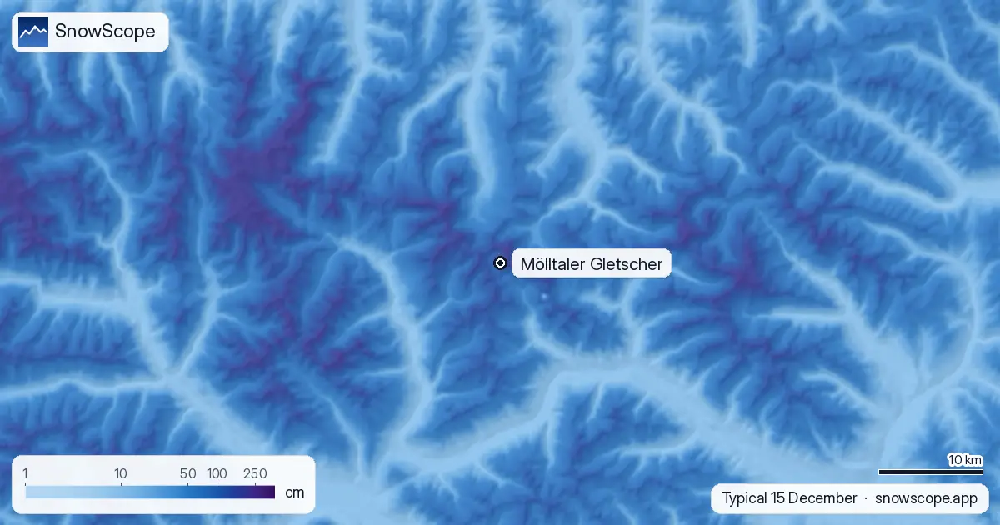

Mölltaler Gletscher فدجنبر: تلج عميق، محطة صغيرة وثمن الموسم الهادي
العيب الأول: Mölltaler Gletscher صغيرة، فيها 21 كم ديال البيستات و 9 تيليسييجات، والطلعة من الواد ديال Möll طويلة. ولكن كلشي آخر مزيان: أول تيليسييج ف 2103 م، فين نهار 15 دجنبر عادي فيه 66 سم فالتاريخ ديالنا ديال 46 شتوة، والموسم الهادي المنشور كيوصل حتى لعشية نوال.
شوف توقعات التلج مباشرة ديال Mölltaler Gletscher فالتطبيق ديال SnowScopeالعلو ديال التلج، التنبيهات والخريطة 3D، فابور.
العيب
ما كاينش التنوع هنا. تسعة ديال التيليسييجات و 21 كم كيعمرو جوج ولا تلاتة ديال الأيام، ماشي سيمانة. والكلاسيي فآخر واد هادي ف Kärnten: خاصك طوموبيل ولا النقل ديال المحطة، والليالي هادية.
العيب التاني فالمعلومة: فاش شفنا، الصفحة الرسمية ديال الأثمنة كانت مازال فيها اللائحة ديال 2025-26. الأثمنة ديال هاد الشتوة تقدر تتبدل شوية.


علاش مازال كتصلح
العلو. المحطة كتبدا من 2103 م وكتطلع حتى ل 3084 م. فدجنبر كتزلج على تلج كامل من أول تيليسييج. فسيمانة 15 حتى 21 دجنبر، 91 % من الشتوات كان فيهم 30 سم ولا كثر لتحت، و 100 % فالوسط (2593 م).
وهي من القلال ديال البلايص فين سيمانة نوال تقريبا مضمونة بتلج عميق: ف 98 % من الشتوات الوسط كان فيه 60 سم ولا كثر فسيمانة 22 حتى 28 دجنبر.
التلج حسب التاريخ
العلو العادي فأول تيليسييج: 50 سم نهار 1 دجنبر، 66 سم نهار 15، 74 سم نهار 24. فالوسط: 93، 128 و 129 سم. حتى عام ضعيف (شتوة من 10) مازال فيه 28 سم لتحت نهار 15 دجنبر، وحتى شتوة من 46 ما كانت الأرض عريانة تما فهاد النهار.
على المدى الطويل الأمر أقل راحة: المعدل ديال دجنبر فالوسط نزل من 117 سم فأول 15 شتوة ل 92 سم فآخر 15. الشتوة اللي فاتت كان 58 سم نهار 15 دجنبر. بزاف، ولكن تحت النورمال ديال زمان.
شحال كتسوا
حسب اللائحة الرسمية (2025-26، آخر وحدة منشورة)، السكيباس ديال نهار للكبار ب 69 EUR فالموسم الهادي حتى ل 24 دجنبر، و 72 EUR فالموسم الكبير. ديال 6 أيام ب 332 EUR فالموسم الهادي و 376 EUR فالكبير.
يعني سيمانة كتسالي قبل عشية نوال كتاخد الثمن الرخيص، فجبل فيه التلج مضمون فهاديك السيمانة.
مقارنة مع Kitzsteinhorn (Kaprun)
Kitzsteinhorn فوق Kaprun هو الكلاسيي المعروف من الجهة الأخرى ديال Hohe Tauern. السكيباس ديال 6 أيام تما ب 396 EUR فبداية الموسم و 440 EUR فالموسم الكبير. الفوق فيه تلج بزاف (137 سم نهار 15 دجنبر عادي)، ولكن الوسط ف 1894 م فيه 40 سم والتحت ف 765 م غير 6 سم.
Mölltaler Gletscher أرخص وفيها تلج كثر فكل علو كتزلج فيه بصح فدجنبر. كتخسر الكبر، السهرات والطريق القصيرة.
نصايح للي كيتزلجو
- لسيمانة كاملة جمع: تلاتة أيام فالكلاسيي والباقي فمحطة أخرى ف Kärnten.
- بقى فالموسم الهادي (حتى ل 24 دجنبر): 332 EUR عوض 376 EUR ل 6 أيام.
- قبل ما تخلص شوف اللائحة ديال هاد الشتوة فالموقع الرسمي: اللي كانت منشورة مازال ديال الموسم اللي فات.
- خارج البيست فالكلاسيي كاينين الشقوق: غير مع گيد ومن بعد النشرة ديال الانهيارات ديال Kärnten.
خرائط أخرى (مواقع خارجية)
المراجع والمصادر
- Mölltaler Gletscher: official lift-pass prices (2025-26), checked 13 November 2026 www.moelltaler-gletscher.at/en/price-list/winter/moelltaler-gletscher
- Kitzsteinhorn (Kaprun): official lift-pass prices (2026-27), checked 13 November 2026 www.kitzsteinhorn.at/en/tickets-prices/ski-board
على هاد الأرقام
الأرقام ديال التلج: التاريخ ديال التلج ديال SnowScope، 46 شتوة اللي فاتت (1980-81 حتى ل 2025-26) فالعلوات ديال المحطة، مصحح بالعلو (تقدير لمنطقة، ماشي البلاغات ديال المحطة)؛ «تلج مزيان» = 30 سم ولا كثر فالأرض فالمعدل ديال السيمانة. الخريطة: العلو العادي ديال التلج نهار 15 دجنبر موزع على التضاريس حسب العلو. البيستات والتيليسييجات: OpenSkiMap. الأثمنة ديال السكيباس: اللوائح الرسمية ديال المحطات، متشافة نهار 13 نونبر 2026؛ الأثمنة تقدر تتبدل.
النشرات الرسمية ديال الانهيارات: Lawinenwarndienst Kärnten
كيفاش تستاشهد بهاد المقال
للبحث، التعليم ولا الصحافة: الأرقام والرسومات تقدر تعاود تخدم بيهم بحرية تحت CC BY 4.0 مع هاد الاستشهاد.
SnowScope (2026), Mölltaler Gletscher فدجنبر: تلج عميق، محطة صغيرة وثمن الموسم الهادي, https://snowscope.app/blog/ar/2026/11/moelltaler-gletscher-december-skiing-carinthia-low-cost.html, تشاف ف 2026-11-14
SnowScope (Atlas Labs). (2026, November 14). Mölltaler Gletscher فدجنبر: تلج عميق، محطة صغيرة وثمن الموسم الهادي. SnowScope snow reports. https://snowscope.app/blog/ar/2026/11/moelltaler-gletscher-december-skiing-carinthia-low-cost.html
BibTeX
@misc{snowscope2026moelltalergletscherdecem,
author = {{SnowScope (Atlas Labs)}},
title = {Mölltaler Gletscher فدجنبر: تلج عميق، محطة صغيرة وثمن الموسم الهادي},
year = {2026},
month = nov,
howpublished = {\url{https://snowscope.app/blog/ar/2026/11/moelltaler-gletscher-december-skiing-carinthia-low-cost.html}},
note = {Published 2026-11-14 13:14 UTC; accessed 2026-11-14}
}· CC BY 4.0 · الطريقة، الداتا والأدوات →
Mölltaler Gletscher: التلج والحرارة حسب العلو، هاد الشتا مقارنة مع اللي فاتت (الأدوات) →
تابع Mölltaler Gletscher
فابور: ميساج ملي يجي التلج، والتوقعات كل صباح.